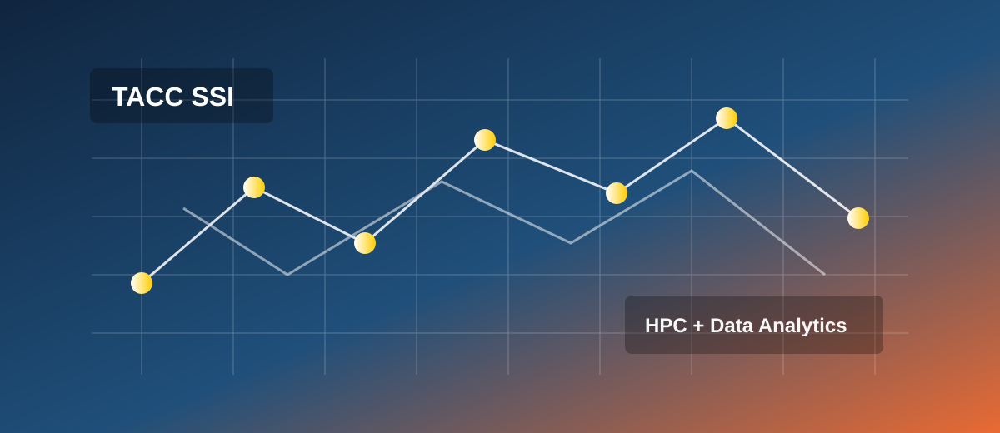

USC - Information Retrieval and Data Science Group

USC - Information Retrieval and Data Science Group
USC/JPL scientist made big data stories possible on The Panama Papers Apache Tika used to extract data from the Panama Papers
USC - Information Retrieval and Data Science Group
Professor Chris Mattmann presenting multimedia metadata based forensics at #WSDM2016 conference

TACC Summer Supercomputing Institute (SSI)
TACC's SSI is a week-long workshop which introduces researchers, faculty, staff, students, and industrial partners to high performance computing, data analytics, and scientific visualization. TACC's technology experts will teach attendees how to effectively use advanced computing resources and technologies like Stampede, Maverick, and Wrangler.